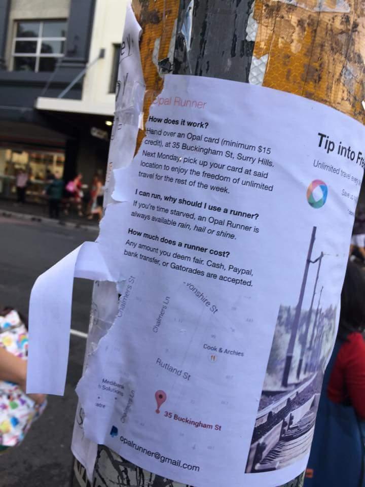

cdmarto posted Opal Runner flyer photo at …opal runner service… - reddit

Public's opinion is mixed. Some are neutral, some for, while others are against.
Neutral: I met someone...
read more...
People synthesize new ideas in a social context. When people are unbounded by distance, the rate of new ideas being synthesized is increased. Some of those ideas will have profound impact on humanity for the better. In other words, efficient public...
read more...
Since I have never taken the time to learn a "modern" integrated development environment (IDE) tool, I do most of my work on the command line. As a side effect, I can be productive on any environment that has command line interface.
Here're two ways...
read more...
Bye Svbtle, say hello to middleman.
I've been looking for an easy to use blogging platform with nice code syntax highlighting. Svbtle fits the bill but net connection is required to blog which slows down the read-eval-print-loop (REPL) to be productive...
read more...
ok, let's get straight into irb because REPL speaks a thousand words…
1
2 |
irb> %w_a b c_
=> ['a', 'b', 'c']
|
That was cryptic…try this
1
2 |
irb> %i_a b c_
=> [:a, :b, :c]
|
That save a whole bunch of keystrokes…how about this
read more...
1
2
3 |
$ bundle
Fetching source index from http://rubygems.org/
Fetching source index from https://rubygems.org/
|
time for coffee break…but then I found this tip on bundler FAQ
1 |
$ bundle install --full-index
|
How much faster is it? Your mileage...
read more...
Time to exercise your citizenship rights. Here is my Financial System Inquiry Submission on Stability - Addressing too-big-to-fail
To David Murray
The enactment of United States of America Glass Steagall Act 1933, here in Australia, is merely a necessary...
read more...
I am a user of
Pow, is a zero-config Rack server for Mac OS X…serving your apps locally in under a minute
and
nginx, [engine x] is an HTTP and reverse proxy server
Now, pow is good for rack app but nothing else. But if nginx sits in front...
read more...
Every thousand miles journey begins with the first step.
My coding journey begins with learning how to type, so I
wrote this qwerty tutorial
I was going to extend it for dvorak…but found Learn typing at the speed of thought!
read more...
So…I had the honor of doing some data migration, which happens to be CPU, and memory intensive.
I called upon Heroku PX Dyno and the Sidekiq with the wrath of one process and 100 threads.
1
2 |
# loading PX with one process and 100 threads
$ heroku... |
Previous page
Next page